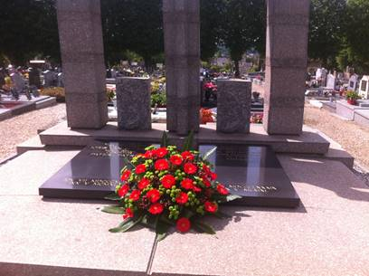

> nieuwsbrief > 2017 - nr 3
Inhoud
Hernieuwen ledenbijdrage voor 2017
Dit is een laatste oproep tot hernieuwing van de
ledenbijdragen voor 2017, gericht tot diegenen die tot nog toe
verstek gaven. Toetreden kan nog steeds, mits overboeking van de
ledenbijdrage. Even herinneren: de minimumbijdrage bleef
ongewijzigd en bedraagt 29 €. In ruil daarvoor verzekeren we u
andermaal de stipte toezending van het al in mei verschenen
nieuwe Jaarboek Joris
van Severen – het 21e al – en van de vier nummers van ons
kwartaalblad Nieuwsbrief
Joris van Severen. Vanaf het bedrag van 35 € boeken we u
met dank als steunend lid. Vereffening graag via onze rekening
IBAN: BE71 0001 7058 1469 – BIC: BPOTBEB1 t.n.v. Studiecentrum
Joris van Severen, Paddevijverstraat 2, 8900 Ieper.
Geluidsfragmenten
uit ‘Die vervloekte oorlog’ ingesproken op youtube
Ruud Bruijns sprak een aantal dagboekfragmenten uit Die vervloekte oorlog,
het oorlogsdagboek van Joris van Severen, in op dit kanaal. Ze
vallen te raadplegen via onderstaande ‘link’:
https://www.google.be/#q=oorlogsdagboek+joris+van+severen+youtube&spf=1494878966907
Omtrent
Frans van Immerseel
We kunnen echt niet klagen over de belangstelling die
het Verdinaso te beurt valt in de ADVN-Mededelingen. In
een vorig nummer van onze Nieuwsbrief
konden we uitgebreid citeren uit de bijdrage over Leo Poppe. In
het jongste 55 (1e kwartaal 2017) lazen we een mooi
geïllustreerde bijdrage over Frans van Immerseel, tekenaar,
glazenier en nog veel meer, maar vooral voormalig Dinaso, die
zijn talent ten dienst telde van de beweging van Joris van
Severen. Verdere info: ADVN, Lange Leemstraat 26, 2017
Antwerpen; of via: www.advn.be
Rechtzetting
In het ‘Ten geleide’ (p. 3) van ons jongste jaarboek
wordt ten onrechte Theo Bruning als auteur vernoemd van de
bijdrage ”Einen
andauerenden Kampf…”. Het is evenwel diens broer Raymund
die voor deze bijdrage instond. Beide broers, zonen van Henri
Bruning, staan wel samen in voor de webpagina’s die beslist het
raadplegen waard zijn.
In het hieronder hernomen inhoudsoverzicht werd dit
rechtgezet.
Jaarboek Joris van Severen 21 (2017)
Maurits Cailliau
Met deze aflevering zijn
we aan het 21e Jaarboek
Joris van Severen toe. Een blik op de ook dit keer wel
zeer gevarieerde inhoud: Net als vorig jaar openen we met een
gegrond commentaar op een bijdrage in het voorafgaande jaarboek.
In “Einen andaurenden Kampf
gegen die Deutschen…” komt Raymund Bruning in het verweer
tegen enkele aspecten die de ‘toonzetting‘ van Michiel Wallaards
bijdrage In de ban van
Joris van Severen overschaduwen en de behandelde
Nederlandse Dinaso’s onvoldoende recht doen. Het is wel
Wallaards verdienste het in Nederland sinds de Tweede
Wereldoorlog in de geschiedenisstudie allesoverheersende
“goed-fout-paradigma” doorbroken te hebben, maar daarbij is de
auteur helaas in andere valkuilen terecht gekomen, meent Bruning
jr.
Merkwaardige
nevengedachte hierbij rond de evolutie in deze binnen Vlaanderen
en België: waar dat stigmatiserende “goed-fout-paradigma” in
Nederland aan het wegebben blijkt te zijn, rukt het hier eerst
echt op, zoals bleek uit reacties in de jongste jaren van
aanwezigheden van politieke tegenstanders op
oostfrontersfeestjes, verjaardagen van oudgedienden en…
colloquia van ons studie-centrum. “Er komt weer ruimte voor
een stigmatisering van een deel van de Vlaamse Beweging”, poneerde
historicus Bruno de Wever al in 1994 – overigens mede als
gangmaker van die evolutie.1
Dat
de persoonlijkheid van Joris van Severen ook heden ten dag nog
jongeren weet te boeien toont Guillaume Renier aan. Hij
selecteerde uit Van Severens oorlogsdagboek teneinde er in zijn
studie zijn oefening in historische kritiek mee te stofferen.
Zijn oefening kreeg Joris
van Severen – verdwaald in “Die vervloekte oorlog” tot
titel. Deze scriptie valt uiteen in een drietal items: vooreerst
een beknopte biografie, waarna een contextuele analyse van de
oorlogsdagboeken, om te eindigen met een ‘casestudy’ over Van
Severens katholicisme in wisselwerking tot zijn liefde- en
seksualiteitsbeleving.
“Wij beleven de mislukking van
het parlementarisme” - Joris van Severen: 1926-mei 1927. Aldus betitelde Romain
Vanlandschoot de afsluitende bijdrage van zijn verfijnde
biografie over het decennium 1917-1927 van Van Severens
politieke werkzaamheid. Mede omwille van de omvang leek het ons
aangewezen dit diepgravende essay over twee jaarboeken te
spreiden. In deze aflevering het eerste luik. Op het einde van
dit tijdsbestek blijkt overduidelijk dat Joris van Severen de
Rubicon definitief overgestoken had en vanaf dan voorgoed zijn
eigen weg ging in de richting van een staatsbestel waarin een op
autoritaire leest geschoeide orde heerst, gericht op de
realisatie van een Nederlands staatconcept en gebouwd op de leer
van het christelijke solidarisme.
“He was a Cold
Shower Fascist”: een Engelsman over Joris van Severen. Zo had in 1966 een toen naamloos
gebleven auteur Van Severen getypeerd in de boekenbijlage van de
gerenommeerde The Times
Literary Supplement. Pieter Jan Verstraete diepte dat
ergernis verwekkende - en menigeen toen een “koude douche”
bezorgende - artikel weer op en schept er – ook omtrent de
auteur - klaarheid over. Als bijlagen daarbij de originele
Engelstalige tekst en een proeve tot vertaling naar het
Nederlands.
De
naam van Leo Poppe is niet weg te denken uit de historiografie
van het Verdinaso. En… evenmin uit deze van de in de
collaboratie verzeilde oorlogsjeugdbeweging. In het najaar van
1982 zou hij daarover komen vertellen binnen de Antwerpse
debatclub, doch daar bleef hij afwezig ten gevolge van zijn
verplichtingen op het te Brugge doorgaande congres van
“Vlamingen in de Wereld”. Persoonlijk hebben we op die avond met
hem in Brugge kennis gemaakt en samen hebben we dan mede in het
gezelschap van zijn oude vriend en DMO-lid Noël Dobbelaere, Van
Severens woonhuis het Cruyce van Bourgonje bezocht. Kristof
Papin bracht die voor de debatclub bedoelde lezing weer boven
water en kadert ze in de tijd van toen onder de titel Leo Poppes laatste maanden
van de collaboratie. Daaruit valt te leren wat we
eigenlijk als wisten, nl. dat Van Severens ideeën en streven
bleven doorwerken, ook bij diegenen die voor de collaboratie
opteerden.
Maurits
Cailliau schets in Omtrent
het Nationaal Studie- en Documentatiecentrum Joris van Severen
de “stamboom” van wat organisatorisch voorafging aan ons huidige
Studiecentrum.
In
1965 hield Louis Gueuning zijn 25e herdenkingsrede voor Joris
van Severen. Een traditie die hij aangevangen had in 1941, in
volle bezettingstijd. Ze kreeg De Stijl, dàt is de Man
tot titel en blijft als bezinningstekst haar volle waarde
behouden.
Het
afsluitend gedicht in deze aflevering is andermaal van Herwig
Verleyen. Met zijn Bezoek
aan het graf van Gaby Warris brengt hij een eresaluut aan
de destijds jongste aanwezige in de kiosk te Abbeville, die tot
haar laatste adem gestreden heeft voor eerherstel.
Homilie herdenkingsmis Blindekenskapel, 20 mei 2017
E.H. Roeland van
Steenkiste
We hoorden in het evangelie het
begin van de afscheidsrede van Jezus. Hij zet meteen de juiste
toon: “laat uw hart niet verontrust worden. Gij gelooft in God,
geloof ook in Mij!”
Drie jaar lang zijn de
apostelen met Hem mee gegaan. Al die tijd hebben ze gehoord wat
Hij verkondigde.
Ze waren er bij toen Jezus de
mensen benaderde: nooit veroordelend, altijd mild, genadig,
zonden vergevend.
Zijn leerlingen zagen hoe Hij
de armen, de zieken, de uitgestotenen hun waardigheid teruggaf.
In woord en daad was de rode draad tijdens zijn leven de
verkondiging van de barmhartige liefde van God, zijn Vader. Nu
neemt Hij afscheid. Zijn levensopdracht is volbracht.
Ten gevolge van de afgunst, van
de haat, van het koppig zelfvoldaan misprijzen en onbegrip van
de Schriftgeleerden en leiders van zijn volk zal Hij sterven aan
het kruis.
België, 10 mei 1940: Joris van
Severen wordt met vele anderen, zonder enige aanleiding of
aanklacht, opgepakt, met spooktreinen weggevoerd en aan de
Fransen uitgeleverd.
Abbeville, 20 mei 1940… Joris
Van Severen wordt met 21 lotgenoten vermoord. Ze worden zonder
enige vorm van proces door Franse soldaten neergeschoten.
Verraden door de achterdocht,
de haat, de rancune van een land dat Joris van Severen, met zijn
Heel-Nederlandse gedachte, op zijn manier heeft gediend.
Hij werd weggevoerd, verwijderd
uit dit land, omwille van zijn idealen, omwille van zijn
Heel-Nederlandse droom: het Dietse volk zijn fierheid, zijn
waardigheid teruggeven.
Joris van Severen werd
weggevoerd, gewelddadig verwijderd uit dit land waar hij op zijn
manier van hield, omdat hij met lijf en leden de gaafheid, de
zelfstandigheid der Nederlanden wilde beschermen.
Dat hij dit deed via de
werking, de eigen stijl, de regels van het Verdinaso was eigen
aan die tijd.
Joris Van Severen behoort tot
de groten van het volk der Lage Landen.
Het is onze taak trouw te zijn
aan zijn testament: het herstel van de Nederlanden, een machtig
Gemenebest, een Prinsenvolk, onaantastbaar aan zijn grenzen,
kloek en tuchtvol aaneengesloten binnen zijn grenzen.
Omwille van zijn trouw aan zijn
levensopdracht, omwille van zijn trouw aan de liefde, die Hij
verkondigde en vóórleefde, is Jezus aan ’t kruis genageld en
gestorven. In de zondagseucharistie vieren wij gelovig zijn
verrijzenis.
In Houe Troue aan zijn ideaal,
het behoeden van de grootsheid der Lage Landen, is Joris van
Severen vermoord.
Hij leeft voort in de velen die
hem nooit zullen vergeten.
Hij leeft voort in hen die zijn
ideeëngoed trouw bewaren.
Hij leeft voort in hen die met
hart en ziel bidden en zingen:
“Mijn schild en de betrouwen
zijt Gij, o God mijn Heer.
Op U zo wil ik bouwen, verlaat
mij nimmer weer.
Dat ik toch vroom mag blijven,
u dienaar t’ aller stond,
De tirannie verdrijven die mij
het hart doorwondt.”
Herdenkingsteksten 2017
Grafrede te Abbevílle op 2l mei 20l7
Stefaan
Codenys, voorzitter Abbeville Comité, Brugge
Wat
maakt van een modale mens een monster? Hoe ontaard moet je zijn
om elk ethisch besef overboord te gooien en simpel te
gehoorzamen aan een marsbevel tot moorden? Wat zagen die Franse
militairen toen ze het eerste viertal buiten riepen en hen met
één enkel woord doodschoten? Wat ging door hen heen toen ze een
vrouw van 60 uit de kelder sleepten en haar koud afmaakten met
geweerkolven en bajonetten? Hoe kan het dat ze zich niets
gelegen lieten aan het pleidooi van een perfect Franstalige Van
Severen en diens appèl tot redelijkheid met kogels smoorden?
Zagen
ze in hun slachtoffers nog wel mensen? Of hadden ze de
gevangenen van Abbevílle zo geobjectiveerd, zozeer tot de Andere
gemaakt, dat elke communicatie bij voorbaat gedoemd was te
mislukken? Eens je een mens tot ding maakt, valt zo makkelijk
het doek: je opent een deur, vermorzelt een leven, schuift de
lade dicht.
Klaar.
Een mensenleven is een kwetsbaar ding. We worden in het verhaal
van Abbevílle geconfronteerd met een opeenstapeling van
vervreemding en van wreedheid, van de arrestaties in Brugge tot
dit dodenhuis in Abbevílle. Hier werden geen mensen om het leven
gebracht, hier werden abstracties gekeeld: de collaborateur, de
spion, de vreemde. De medemens werd gereduceerd tot een te
vernietigen ding. Hoe nauw is in de mensenwereld de grens tussen
hemel en hel. Hoe makkelijk laten we ons ertoe brengen ons hart
te sluiten, ons geweten het zwijgen op te leggen, onze ogen te
sluiten in de fanatieke overtuiging van ons eigen gelijk. En dat
dit hier in Abbevílle gebeurde, in een oorlog tegen deze
barbarij, moet ons tot nederigheid stemmen. Het is aan elk van
ons om telkens weer de vraag te stellen: ben ik een mens?
Ziehier het belang van eeuwige gedachtenis.
Joris van
Severen. Een fijnzinnig man met heel wat woeligheid in
zich
Een politieke eersterangsfiguur
met uitzonderlijk veel talent
Grafrede te Abbeville op 21 mei 2017
Luc
Seynaeve, voorzitter Stichting Joris van Severen
20 mei
2017. Opnieuw zijn we hier samen om Joris van Severen en Jan
Ryckoort te herdenken. Beiden werden vermoord. Hun politieke
gedachtengoed blijft boeiend. In 1983 werd Rachel Baes naast
Joris van Severen begraven. Deze concessie werd geregeld in
1959. Dit was haar uitdrukkelijke wens, testamentair vastgelegd.
Rachel Baes was één van zijn belangrijkste geliefden, wellicht
zijn belangrijkste muze en grootste liefde. Ik breng dit vandaag
even terzijde daar mij door verschillende mensen wordt gewezen
op het feit dat het graf van Rachel Baes er steeds zo
troosteloos bij ligt. Vanuit de hoek van de getrouwen van Joris
van Severen zou wat opfrissing van het graf wel wat "joie de
reconnaissance” bijbrengen en uiteindelijk zou Joris dit in het
bijzonder appreciëren. "De dood is leven" schrijft Guido
Gezelle, vandaar dat wat daadkracht hieromtrent "respectvol" en
”gratieus” zou zijn.
Inderdaad,
Joris van Severen, een fijnzinnig man. Reeds vanaf zijn
jeugdjaren wordt hij steeds méér en méér onderlegd. Schrijvers
als Nietzsche, Leon Bloy, Dostojewski, Flaubert, D'Annunzio,
Oscar Wilde.... enz. behoren tot zijn "préférés". In zijn
oorlogsdagboeken schrijft hij op 28 juli 1917: "De toekomst is
wat kunstenaars zijn".
Dit is
een sterke uitspraak, bovendien bijzonder intens én
maatschappelijk inhoudelijk verrijkend. Dit wijst erop dat de
originele Joris (op dit moment 21 jaar) heel wat "ruimte" en
"breedte" in zich had. Hij las enkele boeken van Oscar Wilde.
Onder meer: The soul of
man under socialism, The picture of Doria Gray, Salomé.
Conclusie na het lezen ervan:
"Ook al is zijn droom te ‘jongensachtig’
idealistisch, ik voel er de ernstige denkerstoon in én de
hoge, diepe, doordachte begeerte van een betere wereld die
we toch allen hebben willen,
willen we het bekennen of niet!" M.a.w. Joris linkt cultuur,
literaire bewogenheid én
kunst tout court met sociale bewogenhedén politiek idealisme.
Dit heeft uiteraard zijn
consequenties in zijn poli-tieke carrière. Hij wordt volksvertegenwoordiger -
met uitstraling - én
wordt de oprichter van
het Verdinaso.

Aan het dubbelgraf te Abbeville op 21 mei 2017
Kenmerkend als rode draad
doorheen zijn politieke parcours is zijn gevoel voor stijl,
klasse en
waardigheid. Joris van Severen was een societyfiguur, komende
uit de elitaire burgerij en zijn politieke speerpunten betreffende het
solidarisme zijn in aanvang theoretisch concept (weliswaar
stevig onderbouwd) doch
zonder veel echte voeling met de positie van de gewone man in
het maatschappelijk bestel
van toen waarbij de vakbonden de zwaksten moesten verde-digen
tegen armoede en
werkloosheid. Hij was niet de man van het volk (le peuple) doch
zijn sociale
bewogenheid was authentiek.
'Vindingrijk' is hij zeker. Hij kan mensen uit
verschillende milieus én verschillende posities op de maatschappelijke ladder
voor zich winnen én hij heeft de gave te "binden" in plaats
van mensen tegen elkaar op
te zetten. Een groepsspeler doch vanuit een leidinggevende
positie. De gave van het
"fijne woord", veel diplomatie, wetende waar, wanneer én hoe je
het zegt minstens even
belangrijk is als wat je zegt. Het is weinigen gegeven dit te
kunnen. Hij is ook is een jonge man vol
ambities én vuur. Deze jeugdigheid trekt hij door én zijn gevoelsleven blijft
”woelig". Zijn privé leven staat haaks op de toen heersende
maatschappelijke moraal.
Toch slaagt hij erin een beweging op te zetten die kiest voor
orde en tucht
gebaseerd op een rigoureuze inzet én precieze maatschappelijke-
politieke omlijnde krachtlijnen.
Weinig overeenstemming tussen zijn politieke ideaal-wereld én
zijn persoonlijke levenswandel.
Dit noemen we "orde in de wanorde".
Dit aspect wordt binnen het
Verdinaso weinig genoemd. Enkele getrouwen hebben kritiek
doch de grote meerderheid
volgt hem. Ook dit is slechts mogelijk als je behoort tot de
zogenaamde "groten der
aarde". Het siert hem. Zijn keuze voor Rachel Baes, een kunstschilderes behorende tot
strekking van het surrealisme, was een keuze voor iemand
met intelligentie,
aantrekkelijk én met wie hij op zijn niveau kon spreken over
kunst, politiek, literatuur...
enz. Een vrouw die hij niet zo vlug
in zijn beweging zou vinden. Het is niet toevallig dat ook Rachel Baes
"kunst" als levensbron ziet. Deze sym-biose tussen beide is dan
ook een verderzetting van
wat hij schreef in 1917: "De toekomst is wat kunstenaars zijn".
Voor
Rachel Baes is de enige echte vorm van vrijheid "de droom".
Joris streefde naar maatschappelijke vrijheid op basis van een
poli-tieke model waarbij het individu een centrale plaats innam. (Plus est en
vous). Rachel Baes was een
surrealistische schilderes. Joris schil-derde zijn manifest en
troetelkind: het Verdinaso. Rachel Baes schreef in april
1965 een boek over hem met als titel Joris van Severen, une âme.
In een gesprek met Theo Hosten, de auteur van het boek De tragische dood van
Joris van Severen en Jan Ryckoort schreef ze: "U zei me
ooit in Brugge: hij was beter kunstenaar geweest!” Haar
antwoord: "lk geloof dat u daar iets essentieels hebt aangeraakt
maar u bekijkt het van de verkeerde kant. Zonder twijfel kan men
een kunstenaar zijn zonder een groot man te zijn, maar alle
grote mannen zijn tenslotte kunstenaars. Er zijn geen
uitzonderingen. Zo moet u het bekijken en het wordt tijd dat
alles na 20 jaar te openbaren."
Rachel
Baes maakte geen klassieke bibliografie van het boek over haar
geliefde. Ook geen "hagiografie". Men kan alleen een schuldige,
een veroordeelde rehabiliteren. Van Severen is strafrechtelijk
nooit veroordeeld en hij heeft geen misdaden gepleegd.” (Einde
citaat)
Bij
wijze van afronding: Joris van Severen hield van innerlijke en
uiterlijke verfijning. Zijn Verdinaso is een poging om een
samenlevingsmodel te creëren die deze beide elementen in zich
hield. Pure kunst waar je echt kunt van houden of helemaal niet.
Verbond van Dinaso Corporaties (VDC)
Luk
Kongs; Jan Creve
Departement
van het Verdinaso, opgericht in 1934.
Na de
maatregelen tegen de Dinaso-syndicaten, eind 1933, werd op 26
augustus 1934 het Verbond van Nationale Arbeiderssyndicaten
(NAS) ontbonden en werd het Verbond van Dinaso Corporaties of
VDC opgericht. De nieuwe organisatie werd geleid door Pol le
Roy, de vroegere verbondssecretaris van NAS die het nieuwe
verbond bleef leiden tot de overgang van het Verdinaso naar de
Eenheidsbeweging-VNV in mei 1941.
Het
VDC startte zijn activiteiten in de zomer van 1935 maar de
werking bleef aanvankelijk beperkt tot West-Vlaanderen. In de
loop van 1936 kwamen er ook in Brabant, Antwerpen en
Oost-Vlaanderen kernen tot stand.
De
meesten van de naar schatting 1000 leden kwamen uit de rangen
van het Verdinaso. Van de voormalige leden van NAS wist het VDC
maar een beperkt deel op te vangen. Vanaf 1935 verscheen het
blad Orde! als
bijlage van Hier Dinaso!,
eerst als maandblad, later als weekblad. In 1939 werd het
vervangen door een zelfstandig maandblad onder dezelfde naam en
door
In
1938 bestonden er een 50-tal corporaties maar hiervan geraakten
er veel nooit uit het papieren stadium. In West-Vlaanderen was
er een grote activiteit van de Boerencorporatie, de
Vlasserscorporatie en het Intercorporatief Verbond van
Bedienden. Buiten West-Vlaanderen waren het vooral de
gewestelijke (overkoepelende) corporaties die een rol speelden
naast actieve kernen van de Dinaso-Corporatie voor Onderwijzers
of de Corporatie voor Gezondheidszorg. De activiteiten beperkten
zich voornamelijk tot studiewerk, kaderdagen en propaganda onder
de vorm van kernvergaderingen, huisbezoeken, colportages en
volksvergaderingen. Ook diensten van werkverschaffing,
juridische bijstand en beroepsdocumentatie bleven beperkt tot
kadervorming.
Na de
Belgische capitulatie werd het theoretisch werk voortgezet, maar
kreeg geen kansen meer tot verwezenlijking. Sommigen hoopten dat
het VDC de kern zou vormen van wat later de Unie van Hand- en
Geestesarbeiders werd maar het bleef bij wensdromen net zoals
bijvoorbeeld het Dinaso-Opvoeders-Gilde (DOG) en andere
organisaties waarvan in april 1941 sprake was.
“(…).
Intussen heeft zich binnen [het inlichtingennet] Zéro de lijn
Athos ontwikkeld. Het initiatief is uitgegaan van een zekere
Edouard Cuvelier, reserveofficier, die samen met zakenman
Fernand Cannoot het inlichtingennet Béret heeft opgezet. (…) Na
wat gehakketak vloeit daaruit de rolverdeling voort met Béret
als militaire en Zéro als politieke, economische en financiële
inlichtingendienst. In oktober 1942, nadat zijn radio-operator
door de Duitsers is gearresteerd, moet Cuvelier worden
geëvacueerd. Cannoot ontfermt zich over het onthoofde Béret en
herdoopt het tot Athos. Via Franz van Dorpe, een uit Kortrijk
afkomstige ingenieur die in Brussel woont, komt hij in contact
met André Moyen. Van Dorpe in 1941 door Cannoot gerekruteerd,
wil strikt genomen geen lid worden van Athos, maar werkt toch
nauw samen met Cannoot. Zijn activiteit zal zich vanaf 1942
richten op de uitbouw van een ‘clandestiene organisatie die
belast is met de coördinatie en de leiding van het verzet met
betrekking tot landbouw en ravitaillering.’ Dat gebeurt vooral
op aansturen van zijn broer Jozef van Dorpe (Baboon), die vanuit
Londen in België geparachuteerd wordt. Die verzetsorganisatie
zal de naam Othello dragen. Met het oog op een succesvolle
werking moet de Nationale Landbouw- en Voedingscorporatie
geïnfiltreerd worden. Baboon maakt daarvoor gebruik van de
relaties van zijn broer Franz, die als oud-Dinaso contact
opneemt met Paul Persyn, eveneens een oud-Dinaso. Persyn heeft -
zo hebben we gezien – een leidende rol gepeeld in de corporatie
en staat dicht bij de secretaris-generaal Emile de Winter. Hij
brengt Franz van Dorpe in contact met Moyen. (…) Hij komt in
contact met figuren uit het Nationaal Legioen, zoal Dirix, of
uit het Verdinaso, zoals Paul Persyn, Franz van Dorpe en Willem
Melis.(..)”
__________________
Bron:
Emannuel Gerard, Widukind de Ridder en Françoise Muller, Wie heeft Lahaut vermoord?
De geheime Koude Oorlog in België, Davidsfonds, 2015, pp.
155-156. De vet gezette namen waren Dinaso’s.
Zie ook de bijdrage van Kevin Moonen ‘Wie heeft Lahaut
ver-moord?’, in Kort
Manifest, nr. 233, pp. 9-11.
Antwoord aan Aimé Stroobants, scribent van De Cronijcke (*)
Geachte Heer Voorzitter,
Mij kwam eerder
toevallig uw bovengenoemd mededelingsblad, 33e jaargang,
januari-februari 2017, pp 5-6, onder ogen. Ik heb daarin met
interesse - als voorzitter van het Studiecentrum Joris van
Severen vzw - het artikel gelezen van uw secretaris Aimé
Stroobants. Sta mij toe u te zeggen dat ik zelden of nooit méér
onzin in één zin heb gelezen over de persoon van Joris van
Severen en zijn beweging het Verdinaso dan het modderspuiten
waaraan deze heer zich be-zondigt.
Vooreerst was Joris van
Severen geen advocaat. Ik weet niet waar uw medewerker dit
gegeven gehaald heeft. Verder vraag ik me af hoe Van Severen het
klaargespeeld heeft om te “collaboreren”, aangezien hij al op 20
mei 1940 vermoord (dit is wel het juiste woord) werd, dus: voor
het einde der vijandelijkheden in het Westen. Toen moest de
collaboratie met de bezetter nog beginnen. Het is u wellicht
bekend dat slechts een klein deel van het Verdinaso in de val
van de rattenvanger van over de Rijn gelopen is, maar dat niet
weinigen verkozen hebben afzijdig te blijven of zelfs in het
ver-zet te gaan. Een boegbeeld van de collaboratie kan hij
bijgevolg nooit geweest zijn. Bovendien is het bekend dat Van
Severen omwille van zijn onafhankelijkheid, zelfs zijn
vijandigheid tegenover het nationaalsocialisme, alles behalve op
een goed blaadje stond in Ber-lijn.
Neergeschoten door
“agenten”? Neen, geachte Heer, hij werd brutaal vermoord door
Franse soldaten. Die niet eens “dronken” waren zoals meestal
geschreven wordt. Zij waren na de zware bombardementen op
Abbeville alleen maar in paniek en wilden vluchten om hun huid
te redden. Uiteraard waren daarvoor die gevangenen een blok aan
hun been, dus wensten zij hen te liquideren. Joris van Severen
heeft geheel vrijwillig de kiosk, waarin ze als beesten
opgesloten zaten, verlaten om te trachten de bevelvoerende
reserve-luitenant tot redelijke gedachten te brengen en het
moorden (in totaal vielen 21 slachtoffers) te doen ophouden. Hij
werd gevolgd door zijn trouwe “luitenant” Jan Ryckoort, een
arbeider, die aanvankelijk nog actief geweest was binnen de
communistische partij (!). Beiden werden afgemaakt, Van Severen
met geweerkogels, Ryckoort met bajonet-steken. Zij liggen
begraven, zij aan zij, op het kerkhof in Abbeville. Ik nodig u
uit om deel te nemen aan het jaarlijkse eerbetoon dat wij hen
brengen. Dit jaar op zondag 21 mei.
Tenslotte, wellicht
bijkomstig: een Dietse Militanten Orde heeft niet bestaan, wel
een Dinaso Militanten Orde (afgekort tot DMO).
Kleine vergissingen zult
u zeggen? Er is anders al voldoende over gezegd en geschreven om
de exacte gegevens te kennen en deze wartaal te vermijden. Ik
hoop dan ook dat uw medewerker zich in de toekomst beter zal
informeren alvorens dergelijke onzin de wereld in te sturen, het
zou de kwaliteit van uw blad beslist ten goede komen. Mogen wij
op een kleine rechtzetting rekenen? Met dank dan in elk geval.
Vik Eggermont,
voorzitter Studiecentrum Joris van
Severen vzw.
_________________
(*) Zie de laatste “sprokkel” van onze Nieuwsbrief 2/2017.
Willem Dejonckheere (Roeselare 7 mei 1936 - Ruddervoorde 7 april
2017). Willem was sinds jaar en dag lid van ons Studiecentrum.
Het is op zijn domein, in de theaterzaal van het Kasteel der
Lakebosschen te Ruddervoorde, dat in 1994 tot negen maal toe
door het Gudrun-Comité het documentair drama Joris van Severen van
Antoon van Vlemmeren opgevoerd werd, in het kader van de
herdenking van Van Severens honderdste geboortejaar.
Van
Severen, Joris (1894-1940), eigentlich
Georges van Severen, belgischer Politiker. S. entstammt einer
angesehenen flämischen Familie, die sich dem tonangebenden
wallonischen Bürgertum assimiliert hat. Er selbst zeigt
allerdings schon in jungen Jahren Sympathie für die flämische
Bewegung. Im Januar 1915 zum Militärdienst ein-berufen,
verweigert S. lange Zeit die Beförderung zum Offizier, um seine
Opposition gegenüber der belgischen Armeeführung unter Beweis zu
stellen, die die flämischen Rekruten als Kanonenfutter
betrachtet. Erst auf Wunsch einiger Kameraden gibt er seinen
Wider-stand auf, gerät allerdings mehrfach in Konflikt mit
seinen Vorgesetzten wegen offenen Eintretens für seine
Landsleute; er wird zwei-mal inhaftiert und degradiert. Da die
Regierung nach Ende des Krieges keines ihrer Versprechen in
Hinblick auf die Besserstellung Flanderns einhält, schließt sich
S. der Frontpartij
an. Aus Enttäuschung über den Parlamentarismus radikalisiert
sich seine Position aber rasch, und 1931 gründet er eine eigene
Partei, den Verbond van
Dietse Nationaal-Solidaristen (Verdinaso), der sehr stark
faschistische Züge aufweist. Mit anderen flämischen Gruppierungen
teilt Verdinaso die Stoßrichtung gegen den belgischen Staat und
die Ausrichtung an Katholizismus und Selbstbestimmung, was ihn
unterscheidet, ist der Separatismus und die Idee eines neuen –
“dietsen“, das heißt groß-niederländischen ~ Reiches. Dieser
eher völkischen Orientierung gibt S. allerdings wenige Jahre
später auf zugunsten der “burgundischen“ Idee einer Föderation
von Belgien, den Niederlanden, Luxemburg und
Französisch-Flandern. Damit einher geht zunehmende Distanz zum
Faschismus dessen zentralistischen und totalitären Ideen S.
immer skeptischer gegenübersteht. Bei Beginn des Zweiten
Weltkriegs wendet er sich mit äußerster Schärfe gegen Hitlers
Aggressionspolitik, wird aber trotzdem als potentieller Verräter
in Haft genommen, über die französischer Grenze geschafft und
ohne Urteil liquidiert. Einige Funktionäre des Verdinaso
entschließen sich nach der Besetzung Belgiens zur Kollaboration,
andere bilden eine der ersten Partisanen-gruppen - “Díetse Eenheid“ - die
den Kampf gegen die Deutschen fortsetzt.
________________
Bron:
Sezession, Heft 34 Faschismus, Februar 2010, Karlheinz Weißmann,
'Faschisten. Biographische Skizzen', p.42-43.
In deze rubriek verwijzen we zonder veel commentaar
naar recente publicaties waarin Joris van Severen en/of het
Verdinaso vermeld worden. We citeren de meest treffende
passussen woordelijk zonder daarin volledigheid na te streven.
We verzoeken onze lezers, met ons, uit te zien naar
publicaties die voor deze rubriek 'stof' kunnen leveren en ons
kopie van de betreffende passages toe te sturen.
Hergé vond zijn
inspiratie in het Italiaans fascisme
In De Standaard van 11
januari 2017 was het weer zover. Er is voor de eerste keer een
kleurenversie op de markt gebracht van Kuifje in het land der
sovjets, het allereerste album van Hergé dat tot hier toe
alleen in zwart-witte versie te krijgen was. Het werd besproken
door Marc Reynebeau die zich nog niet zo lang geleden liet
opmerken door bij een artikel over Joris van Severen een foto te
voegen van een antifascistische militie die op 1 mei 1939 met
gebalde linker vuist in Brussel opmarcheerde en er bij te
vertellen dat het om een optocht van militanten van het
Verdinaso ging. Reynebeau, die naar verluidt ook historicus zou
zijn, zag in deze nieuwe uitgave de gedroomde gelegenheid om als
een soort prelaat van de politiek correcte kerk nog maar eens
een inquisitieonderzoek tegen het boek en de al zo lang van
ketterij verdachte Hergé van start te laten gaan.
____________________
Bron: Francis van den Eynde, in
Nieuwsbrief Knooppunt Delta, nr. 112, januari 2017.
Over
de invloed van Joris van Severen
'Ruim
twintig jaar geleden gaf Eric Defoort een lezing over Joris van
Severen in de achterzaal van een (inmiddels verdwenen) taverne
aan de Frankrijklei te Antwerpen. Je kon de Dinaso’s zo uit het
publiek plukken: keurig gekleed, voorname houding, bedachtzaam
en hoffelijk in de formulering van hun vragen of bedenkingen. Ik
heb het hen vaak horen zeggen: “De Leider drukte een blijvende
stempel op zijn volgelingen, gaf hen een gevoel van
eigenwaarde.” Die stempel bleek echter inhoudelijk erg
oppervlakkig: na de moord op de Imperiale Staatsman door de
Franse soldateska verloor zijn aanhang elk houvast, en je vindt
Dinaso’s zowel in de radicale collaboratie als in het verzet
terug. De man die met Tagore en Oktober dweepte, de
Vlaams-nationalist die groot-belgicist werd, de impliciete
aanhanger van de leer der dubbele waarheid, heeft in sociaal en
mentaal erg uiteenlopende kringen meer invloed gehad dan
doorgaans bevroed wordt – denk maar aan Cobra Dotremont of
Paribas Naessens.'
___________________
Bron:
Henri-Floris
Jespers, in: Mededelingen
van het Centrum voor Docu-mentatie & Reëvaluatie, nr.
290, 4 februari 2017.
PS:
Henri-Floris
Jespers (°1944) overleed op 9 april jl.
Eugène
de Grunne was, evenzeer als zijn broer Xavier, een fervent
municipalist en een groot voorstander van de reïntegratie van de
adel in de maatschappij door een duidelijk engagement in het
openbare en politieke leven. Dit zal later onder meer blijken
uit zijn publicatie Aristocratie
et Fierté (1937), zijn lidmaatschap van de ‘Vereniging van
de Adel’ en zijn sympathie voor de persoon en bepaalde ideeën
van Joris van Severen, de leider van het extreem-rechtse
Verdinaso.
___________________
Bron:
Michel
Spreutels, in: Uitgekamd,
gemeenschapskrant van Wezembeek-Oppem, jg. 5, nr. 2, 2004,
p. 5.